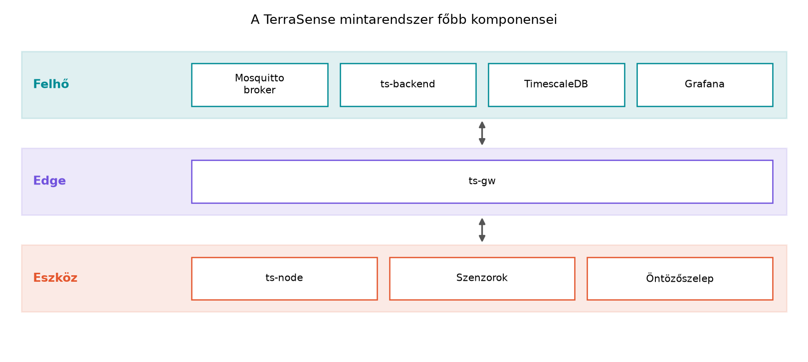

Egy IoT-rendszer szoftveres vertikuma sok programozó számára ismeretlen terület: a mikrovezérlőn futó, néhány KiB memóriában gazdálkodó firmware-től a felhőben futó, skálázódó backendig minden réteget más nyelv, más futásidő és más megbízhatósági modell jellemez. Ha valaki erős C/C++ és Linux-tudással rendelkezik, de még nem épített IoT-rendszert, akkor a legnagyobb kihívás nem a nyelvi szintaxis, hanem a rétegek közötti szemléletváltás: hogyan lesz egy RTOS-szálból kiolvasott szenzorértékből megbízhatóan tárolt idősoros adat, miközben az eszköz akár évekig elemről fut, és a hálózat időnként elérhetetlen.
Ez az alfejezet rögzíti, milyen előismeretekre épít a könyv, bemutatja a végigvitt mintarendszert, és ajánlott olvasási utakat ad, hogy mindenki a saját céljának megfelelő mélységben haladhasson.
A könyv feltételezi, hogy az olvasó programozóként dolgozik, és a következő területeken nem igényel alapozó magyarázatot:
malloc/free szemlélet, void * és
típuskonverzió.vector, map, string,
thread, mutex), kivételkezelés alapjai.Makefile vagy CMake alapú build, naplózás és hibakeresés
strace-szel vagy gdb-vel.Ha ezek közül valamelyik hiányzik, érdemes előbb pótolni, mert a könyv a C/C++/Linux fogalmakra rövid analógiákkal hivatkozik, és nem magyarázza el őket újra. A következő önellenőrző lista segít felmérni az erősségeket:
| Terület | Erős, ha például… | Gyenge, ha… |
|---|---|---|
| C bitműveletek | Gond nélkül ír reg |= (1 << 3) kifejezést |
Nem tudja egy bitmaszk hatását fejben kiértékelni |
| C++ RAII | lock_guard-ot vagy saját RAII-osztályt használ |
Destruktorban nem érti a felszabadítás sorrendjét |
| Linux socketek | Írt már TCP/UDP klienst vagy szervert | Csak elméletből ismeri a connect/bind
hívásokat |
| JEE fogalmak | Tudja, mi a JMS-üzenet és a JPA-entitás | A Java-nyelvet és a Jakarta EE-t is most látná először |
Ez a lista nem vizsga, hanem iránytű: ha valamelyik sorban bizonytalan, akkor a hozzá tartozó fejezetben érdemes lassabban haladni.
A fenti alapokra építve a könyv nulláról tanítja a következőket:
Ezeket a témákat mindig a TerraSense mintarendszer konkrét problémájához kötjük, így nem „lexikonként”, hanem működő rendszer építése közben sajátíthatók el.
Definíció. A TerraSense egy olyan, a könyvben végigvitt mintarendszer, amely egy üvegház klímáját és talaját figyeli, és a mért adatokból riasztásokat, vezérléseket és dashboardokat állít elő. Minden labor ennek egy darabját építi meg vagy bővíti.
A rendszer fő komponensei:

A rétegek és a hozzájuk tartozó komponensek:
ts-node nevű
szenzorcsomópont Zephyr RTOS alatt, C nyelven fut. Méri a hőmérsékletet
(°C), a relatív páratartalmat (%RH) és a talajnedvességet (%), valamint
egy öntözőszelepet vezérel. Elsődlegesen a Zephyr
native_sim célján fut, így valós hardver nélkül is
fejleszthető.ts-gw egy Linux-gateway,
C++17/20 és CMake használatával. Bemenete a szimulációban UDP, valós
hardveren BLE GATT; kimenete MQTT. Feladata a protokollfordítás, a
pufferelés és a biztonsági határ kijelölése.ts-backend Java 21 és Spring Boot
alapú backend, a PostgreSQL + TimescaleDB idősoros tárolás, valamint a
Grafana dashboard. A backend fogadja a telemetriát, REST API-t és
eszközárnyékot biztosít, parancsokat küld lefelé, és riasztásokat
generál.Az azonosítók és üzenetek konvencióit a könyv rögzíti: a site például
gh1 (üvegház), a node például n001; a
telemetria-üzenetben site, node_id,
boot_id, a bootoláson belül monoton seq
sorszám és ts eseményidő (UTC, epoch ms) szerepel. A
topicok a terrasense/<site>/<node>/... sémát
követik. Ezeket a konvenciókat az A TerraSense
mintarendszer architektúrája alfejezet véglegesíti, és a későbbi
laborok feltételezik.
A könyv az alábbi jelöléseket használja következetesen; a hasonló nevű fogalmak nem helyettesíthetők egymással.
| Fogalom | Jelölés a könyvben | Mit jelent | Nem tévesztendő össze |
|---|---|---|---|
| helyszín | site |
a telepítési hely, például gh1 |
a csomóponttal (node) |
| csomópont | node_id |
az eszköz azonosítója, például n001 |
az MQTT kliens-azonosítóval |
| MQTT kliens-azonosító | client_id |
az MQTT munkamenet azonosítója | a node_id-val |
| bootolási munkamenet | boot_id |
egy bootolás egyedi azonosítója | a seq számlálóval |
| eseménysorszám | seq |
bootoláson belüli számláló | a globális sorrenddel |
| parancsazonosító | cmd.id |
a parancs korrelációs azonosítója | az aktuátorral (actuator) |
| aktuátor | actuator |
a vezérelt eszköz, például valve1 |
a parancs azonosítójával |
A könyv hét fő részből áll, amelyek a teljes szoftveres vertikumot lefedik:
ts-gw C++-ban,
store-and-forward, üzemeltetés, edge-feldolgozás.Továbbvitt eredmény. Minden alfejezet laborja a
~/iot-labor/ könyvtárban, azon belül iNNN/
alkönyvtárban dolgozik. A közös futtatókörnyezet a
~/iot-labor/stack/compose.yaml fájlban gyűlik össze. Egy
alfejezet kimenete (kód, konfiguráció, konvenció, döntés)
továbbvitt eredménynek számít, ha egy későbbi alfejezet
arra épít. Ilyen például a TerraSense komponenslistája és
azonosítórendszere, amelyre minden labor hivatkozik: ezt az A TerraSense mintarendszer architektúrája alfejezet
rögzíti, a labor futtatókörnyezetét pedig a A labor
felállítása: Linux host, Docker, Zephyr, Mosquitto, Java alfejezet
állítja elő. A továbbvitt eredményeket a szöveg mindig kiemelten,
„Továbbvitt eredmény.” kezdetű bekezdésben mondja ki, és a „Rövid
összefoglaló” című szakasz is felsorolja, így a későbbi alfejezetek
egyértelműen az előzményre hivatkozhatnak.
A laborok a következő szerkezetet követik:
~/iot-labor/
├── i004/
│ └── ... # a labor futtatókörnyezet felállításának fájljai
├── i009/
│ └── ... # az első Zephyr alkalmazás
├── i028/
│ └── ... # MQTT-kliens labor
└── stack/
└── compose.yaml # közös Docker Compose fájlMinden labor elején egy „Munkakönyvtár:” feliratú blokk adja meg a
pontos elérési utat, és a
mkdir -p ~/iot-labor/iNNN && cd ~/iot-labor/iNNN
parancsot. A korábbi labor fájljait explicit cp-vel vagy
relatív hivatkozással kell felhasználni, így a függőségek nyomon
követhetők maradnak.
A könyv laborjai nem különálló példák, hanem egyetlen, fokozatosan bővülő rendszer állapotai. Hogy ez önálló tanulásnál is követhető legyen, a laborokhoz a következő állapotkezelési szerződés tartozik:
v1.0) és
a verziómátrixban rögzített eszközverziókkal. A tag nem azonos a könyv
szövegének kiadásával: a szöveg a tagre és a hozzá tartozó commitra
hivatkozik.iNNN labor
elején a „Munkakönyvtár:” blokk megadja, mely korábbi labor mely
fájljait kell cp-vel átemelni, vagy mely relatív útvonalon
érhetők el. Az átemelés nélkül a labor nem reprodukálható.~/iot-labor/iNNN/ könyvtár tartalmazza a labor kimeneteit;
a „Rövid összefoglaló” néven nevezi a továbbvitt fájlokat, konvenciókat
és döntéseket.~/iot-labor/REFERENCE.md fájl laboronként rögzíti a
kiinduló és kész állapotot, a létrehozott vagy módosított fájlokat és a
következő laborba átadott elemeket. Ez a jegyzék a laborok közötti
migráció ellenőrzőpontja.REFERENCE.md-ben külön bejegyzés rögzíti az érintett
korábbi laborokat.Ez a szerződés akkor teljesül, ha a könyv utasításaiból a 3.1–23.1 laborút tiszta Ubuntu-környezetben, a referenciakód tagjének megfelelő állapotból végigjárható. A jelen kézirat a szerződést rögzíti; a referenciatároló és a laboronkénti állapotjegyzék feltöltése a kiadás előtti feladat.
A laborok reprodukálhatósága érdekében a könyv az alábbi, kiadáshoz rögzített verziómátrixot használja. Ez nem azt jelenti, hogy minden lépés csak ezekkel a verziókkal fut; ha a tanuló eltér, a szövegben jelölt kompatibilitási pontokat ellenőrizni kell. A mátrix a könyv példáinak és parancsainak közös hivatkozási alapja.
| Komponens | Rögzített verzió | Megjegyzés |
|---|---|---|
| Ubuntu | 24.04.1 LTS, x86_64 | a labor hostja |
| Linux kernel | 6.8 | az Ubuntu 24.04 alapkernelje |
| GCC / G++ | 13.2 | a host C/C++ fordítója |
| CMake / Ninja | 3.28.3 / 1.11.1 | a gateway és a Zephyr build eszközei |
| Python | 3.12.3 | rendszer-Python; a west külön venvben fut |
| west | 1.2.0 | Zephyr meta-eszköz |
| Zephyr | 3.7.0 LTS | a firmware és a native_sim alapja |
| Zephyr SDK | 0.16.8 | linux-x86_64, SHA-256 ellenőrzéssel |
| Docker Engine / Compose | 27.3.1 / v2.29.7 | konténeres szolgáltatások |
| Eclipse Mosquitto | 2.0.18 | eclipse-mosquitto:2.0.18 image |
| PostgreSQL / TimescaleDB | 16.4 / 2.17.2 | timescale/timescaledb:2.17.2-pg16 image |
| Grafana | 11.2.0 | dashboard |
| OpenJDK / Maven | 21.0.4 / 3.9.9 | backend |
| Spring Boot | 3.3.4 | backend keretrendszer |
| Eclipse Paho C / C++ | 1.3.13 / 1.3.2 | MQTT kliensek |
| OpenSSL | 3.0.13 | Ubuntu 24.04 rendszercsomag |
A mátrixban szereplő verziók a könyv példáinak referenciaállapotát adják, és ez a könyv egyetlen verzióforrása: a laborokban szereplő konkrét verziószámok ehhez igazodnak. Ahol egy fejezet ettől eltérő verziót vagy API-t használ, ott a szöveg külön kimondja az eltérést és annak következményét; a legújabb verzió vak átvétele nem része a módszernek. A verziómátrixot a kiadás előtt a referenciakörnyezetben lefuttatott füsttesztekkel kell igazolni; a mátrix önmagában nem bizonyíték a működésre. A mátrix a kiadás dátumával együtt kerül a szerkesztői mellékletbe, és a füsttesztek jegyzőkönyve ugyanott kap helyet.
A kiadás nem tekinthető késznek, ha egy kötelező labor működésének feltétele nyitott. Az „ellenőrizendő” jelölés önmagában nem elfogadható lezárás: a kéziratban előforduló összes ilyen helyet a kiadás előtt egyenként felül kell vizsgálni, és négy mezővel le kell zárni:
Ami a kiadásig nem zárható le, az pontos hatókörrel és ismert bizonytalanságként nevezhető meg, de nem lehet a kötelező labor működésének feltétele. A szabványazonosítókat és a jogi kötelezettségeket a hivatkozott verzióval együtt kell ellenőrizni; az „aktuális” vagy „legújabb” hivatkozás önmagában nem elfogadható. A kiadás előtti ellenőrzőlistát a kézirat szerkesztői melléklete tartalmazza.
A könyv többféleképpen olvasható, attól függően, hogy az olvasó melyik rétegre koncentrál.
| Olvasási út | Kinek ajánlott | Fő fejezetek | Elhagyható | Kötelező labor és előfeltétel |
|---|---|---|---|---|
| Teljes út | Mindenki, aki a teljes vertikumot akarja érteni | I–VII. rész, sorrendben | — | A labor felállítása: Linux host, Docker, Zephyr, Mosquitto, Java, majd a laborok sorrendben; a korábbi labor kész állapota |
| Eszközoldali út | Beágyazott C/C++ fejlesztő, aki a firmware-re és az edge-re koncentrál | I., II., III. (MQTT-ig), IV. rész; a VI. részből a biztonsági alapok | V. rész (backend), kivéve az ingest fogalmát | A labor felállítása: Linux host, Docker, Zephyr, Mosquitto, Java, Miért RTOS? A Zephyr felépítése és az első alkalmazás, MQTT a gyakorlatban: Zephyr-kliens és Mosquitto; a Zephyr-laborokhoz aktivált venv |
| Backend-oldali út | Java/backend fejlesztő, aki a felhőoldalt építi | I. rész; III. részből az MQTT és az adatformátumok; V. rész; VI. részből a biztonság és tesztelés | II. rész (mikrovezérlő) és IV. rész (gateway) mély technikai részei | A labor felállítása: Linux host, Docker, Zephyr, Mosquitto, Java (broker és visszajátszó), A ts-backend váza: REST API és egészségellenőrzés, Ingest: MQTT-ből a backendbe, idempotensen, Parancsok és konfiguráció lefelé: kézbesítés, nyugtázás, időkorlát; firmware és gateway laborja nélkül |
Az eszközoldali úton haladóknak is meg kell érteniük legalább a
MQTT-topicok és a telemetria-séma konvencióját, mert a firmware ezeket
állítja elő. A backend-oldali úton haladóknak pedig ismerniük kell a
native_sim korlátait, hogy a kapott adatok értelmezhetők
legyenek.
A backend-oldali út szimulált bemenete. A
backend-oldali út nem igényli a firmware megírását. A szükséges
MQTT-forgalmat a ~/iot-labor/i004/telemetry_replay.sh
szimulátor állítja elő, amely a telemetry.jsonl fájl sorait
publikálja a 4.1 laborban létrehozott brokerre. A backend ezt a valós
MQTT-forgalmat dolgozza fel; a firmware és a gateway ebben az útban
elhagyható. A script és a mintafájl:
#!/usr/bin/env bash
# ~/iot-labor/i004/telemetry_replay.sh
set -euo pipefail
BROKER_CONTAINER="${BROKER_CONTAINER:-lab-broker}"
TOPIC="${1:-terrasense/gh1/n001/telemetry}"
FILE="${2:-$HOME/iot-labor/i004/telemetry.jsonl}"
while IFS= read -r line; do
docker exec "$BROKER_CONTAINER" mosquitto_pub -t "$TOPIC" -m "$line" -q 1
sleep 1
done < "$FILE"{"site":"gh1","node_id":"n001","boot_id":"b7c1e2a4","seq":1,"ts":1717000000000,"t":23.4}
{"site":"gh1","node_id":"n001","boot_id":"b7c1e2a4","seq":2,"ts":1717000010000,"t":23.6}
{"site":"gh1","node_id":"n001","boot_id":"b7c1e2a4","seq":3,"ts":1717000020000,"t":23.5}chmod +x ~/iot-labor/i004/telemetry_replay.sh
~/iot-labor/i004/telemetry_replay.shA visszajátszás ütemezése (egy üzenet másodpercenként) illusztratív, nem mért érték. A szimulátor a brokert használja, ezért a 4.1 labor brokerének futnia kell; a backend-oldali út első lépése ennek ellenőrzése.
A PDF fejezetszámai és a forrás iNNN azonosítói
eltérnek, ezért az alábbi táblázat a gyors megfeleltetést adja. A
tartományon belül a PDF-alalfejezet és az iNNN sorszáma
együtt nő; a munkakönyvtár a fejezet első alfejezetének könyvtára, a
további alfejezetek a saját iNNN/ könyvtárukban dolgoznak.
Például a 8.1 alfejezet az i018 fájl, a 8.2 az
i019, a 8.3 az i020.
A fejezeteken belüli pontos bemenetet és a továbbadott fájlokat a labor „Munkakönyvtár:” blokkja és a „Rövid összefoglaló” nevezi meg; ez a táblázat csak a fejezet- és könyvtárszintű tájékozódást szolgálja.
A hosszú, sok technológiát érintő útvonalhoz részenként mérhető kimeneteket és küszöböket rögzítünk. A küszöböt a tanuló a megoldások elolvasása nélkül is ellenőrizni tudja; a kötelező labor kimenetének reprodukálhatónak kell lennie.
| Rész | Tanulási kimenet | Ellenőrzési küszöb |
|---|---|---|
| I. Indulás | Ismeri az IoT rétegmodelljét, az NFR-ek szerepét és a labor eszközeit | Önállóan fel tudja sorolni a TerraSense komponenseit, és a 4.1 labor füsttesztjei sikeresek |
| II. Eszköz | Zephyr-alkalmazást ír szenzorral, állapotgéppel és watchdoggal | A native_sim build lefut, a küszöb- és aktuátorteszt a
várt állapotváltást adja, a watchdog-teszt újraindulást okoz |
| III. Kommunikáció | MQTT-klienst kezel reconnecttel, duplikációkezeléssel, retained és Last Will viselkedéssel | Újracsatlakozás után a telemetria folytatódik, a duplikált üzenet
egyszer számít, a status retained üzenete a feliratkozó
későbbi indulásakor is megjelenik |
| IV. Edge és gateway | C++ gatewayet épít store-and-forward pufferrel | Hálózatkiesés alatt az adat pufferelődik, visszatöltéskor hiány és duplikáció nélkül a backendbe kerül |
| V. Backend és adat | Idempotens ingestet, idősoros tárolást, REST API-t és parancsutat készít | A duplikált üzenet egyszer tárolódik, a REST lekérdezés az elvárt adatot adja, a parancs nyugtázása és időkorlátja működik |
| VI. Biztonság és OTA | Fenyegetésmodellt készít, mTLS-t és OTA rollbacket valósít meg | A hitelesítés nélküli kapcsolat elutasításra kerül, a megszakított OTA után az előző firmware indul |
| VII. Platform és záróprojekt | Build vs. buy döntést hoz, a teljes rendszert átvételi teszttel igazolja | Az átvételi ellenőrzőlista minden tétele reprodukálható bizonyítékkal lezárható |
Minden alfejezet végén négy fokozatos feladat található: (a) fogalmi vagy döntési kérdés, (b) számolási vagy tervezési feladat, (c) implementációs feladat a TerraSense rendszerben, (d) hibakeresési vagy kiterjesztési feladat. A feladatok megoldása a „Megoldások” című részben teljes, indoklással ellátott választ ad.
Feladatkártya. A feladat címe a tényleges tevékenységet nevezze meg, ne a sablonhelyet. Minden feladatnál öt mezőt adunk meg: (1) típus a tényleges tevékenység szerint (fogalmi/döntési, számítási/tervezési, implementációs, hibakeresési/kiterjesztési), (2) előfeltétel, (3) késztermék, (4) elfogadási feltétel, (5) becsült nehézség. Ha egy feladatnak nincs egyetlen helyes megoldása, a „nyitott tervezési feladat” jelölést kapja. Az alábbi táblázat ezt a sémát mutatja be a jelen alfejezet feladatain.
| Feladat | Típus | Előfeltétel | Késztermék | Elfogadás | Nehézség |
|---|---|---|---|---|---|
| 1 | fogalmi/döntési | a fejezet elolvasása | rövid indoklás | a válasz a C-tudást nevezi meg indoklással | könnyű |
| 2 | tervezési | olvasási utak ismerete | útvonalválasztás indoklással | a választás a firmware-szerephez illeszkedik | könnyű |
| 3 | implementációs | ~/iot-labor/ írható |
stack/ könyvtár |
ls -la ~/iot-labor/ mutatja a stack
könyvtárat |
könnyű |
| 4 | hibakeresési/kiterjesztési | a továbbvitt eredmények elve | magyarázat és helyes cp-lépés |
a válasz kimondja, hogy nincs automatikus feloldás | közepes |
Kódblokkok státusza. Minden kódblokk előtt vagy a bevezető mondatban jelöljük a státuszát:
A „Megoldások” a labor működéséhez szükséges kódrészletet teljesen adja meg; a nem kötelező kiegészítések jelölt vázak lehetnek. A „teljes releváns kódrészlet” ígérete tehát a kötelező laborútra vonatkozik, nem minden szemléltető blokkra.
Várt kimenet. Minden „Várt kimenet” blokk kétféle lehet: futtatott (a kiadás előtt ténylegesen lefuttatott, determinisztikus példa kimenete) vagy illusztratív (a helyes működés várható tartalmát mutatja, de nem futási eredmény). A blokk címkéje vagy a közvetlenül előtte álló mondat mondja meg, melyik. Determinisztikus programnál a kiadás előtt a tényleges kimenetből kell generálni a példát; nem determinisztikus vagy hardverfüggő kimenetnél az illusztratív jelölés kötelező. A könyvgenerátor a kódot nem futtatja, ezért a jelen kéziratban szereplő kimenetek illusztratívak, kivéve, ahol a szöveg futtatott eredményt jelöl.
A laborokban megadott mért értékeket (késleltetés, fogyasztás,
hatótáv) a könyv csak akkor közöl, ha azok forrásból származnak vagy
„illusztratív” jelölést kapnak. A native_sim időzítése és
energiafogyasztása nem hardverhű, ezért minden ilyen mérésnél a szöveg
ezt jelzi.
ts-node szoftverét kell elkészítenie. A fenti olvasási utak
közül melyiket választaná, és mely fejezeteket tartaná feltétlenül
szükségesnek? Válaszát indokolja.~/iot-labor/ és benne a stack/
könyvtár. Ellenőrizze, hogy a mkdir -p parancs után a
ls -la ~/iot-labor/ a stack könyvtárat
mutatja.~/iot-labor/i004 könyvtárban létrehozott fájlokat a
következő laborok automatikusan megtalálják. Mi ezzel a probléma? Mit
kell tennie a helyes használathoz a Továbbvitt
eredmények elve szerint?A legnagyobb nehézséget a C pointerek és bitműveletek hiánya okozná, mert a mikrovezérlős fejezetek a regisztereket és a memóriát közvetlenül, pointerekkel és bitmaszkokkal érik el. RTOS-ismeret hiánya nem akadály, mert azt a könyv nulláról tanítja; a C++ hiánya a gateway-résznél, a Linux hiánya a laborok futtatásánál okozna gondot, de a legalapvetőbb az eszközrétegben a C-tudás.
Az eszközoldali út a megfelelő választás, mert a firmware-fejlesztőnek a II. rész (mikrovezérlő, RTOS, szenzorok) és a III. rész MQTT-részei a legfontosabbak. A IV. rész a gateway miatt hasznos, de a backend (V. rész) elhagyható, kivéve az ingest fogalmát, hogy tudja, milyen formában érkezik az adat a felhőbe. A VI. részből a biztonsági alapok szükségesek, mert a firmware-nek is biztonságosnak kell lennie.
A parancsok:
mkdir -p ~/iot-labor/stack
cd ~/iot-labor
ls -laA várt kimenetben a stack könyvtár látható.
cp-vel vagy relatív
hivatkozással kell a korábbi labor fájlját felhasználni. Ha ez elmarad,
a labor nem reprodukálható, és a továbbvitt eredmény függősége sérül. A
helyes gyakorlat: a „Munkakönyvtár:” blokkban megadott cp
parancsot futtatni, vagy a fájlra relatív elérési úttal hivatkozni a
saját iNNN/ könyvtárból.Ez az alfejezet rögzítette a könyv előismeret-feltételeit: erős C,
C++ és Linux-tudás, valamint JEE-ből csak fogalmi ismeret. Bemutatta a
TerraSense mintarendszert, amelynek komponensei: ts-node
(Zephyr, C), ts-gw (Linux-gateway, C++), Mosquitto broker,
ts-backend (Spring Boot), TimescaleDB és Grafana. A
rendszer azonosító- és topic-konvencióit az A
TerraSense mintarendszer architektúrája alfejezet véglegesíti. A
laborok a ~/iot-labor/iNNN/ könyvtárban, a közös
futtatókörnyezet a ~/iot-labor/stack/compose.yaml fájlban
található; a futtatókörnyezet felállítását a A labor
felállítása: Linux host, Docker, Zephyr, Mosquitto, Java alfejezet
írja le. A továbbvitt eredmények elve biztosítja, hogy minden labor a
korábbiak kimenetére épül. Ajánlott olvasási utak: teljes, eszközoldali
és backend-oldali.
Ez az alfejezet bevezető jellegű, nincs szükség külső forrásra. A technológiai verziókat (Zephyr, Spring Boot, Mosquitto, Java) a fenti verziómátrix rögzíti; a konkrét API-neveket a későbbi alfejezetek ehhez a mátrixhoz kötve adják meg. Ahol ez nem történik meg, az a kiadás előtti, blokkoló szerkesztői feladat a fenti ellenőrzési politika szerint. A szabályozási határidők és a hardverjellemzők a megfelelő szakaszoknál megnevezett forrásokhoz kötve szerepelnek.